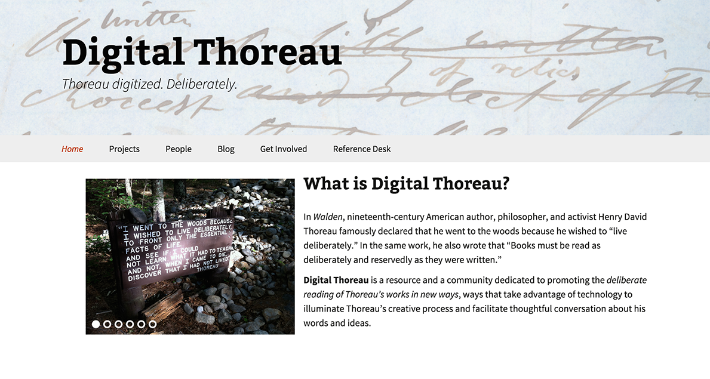
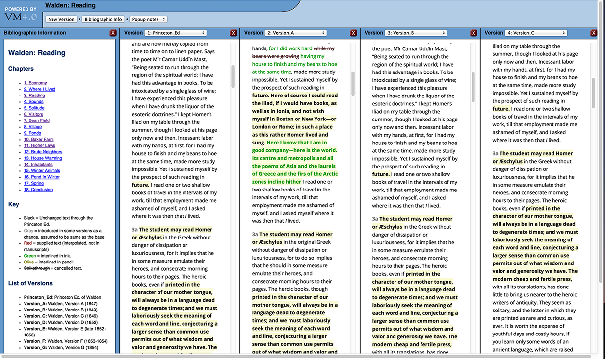
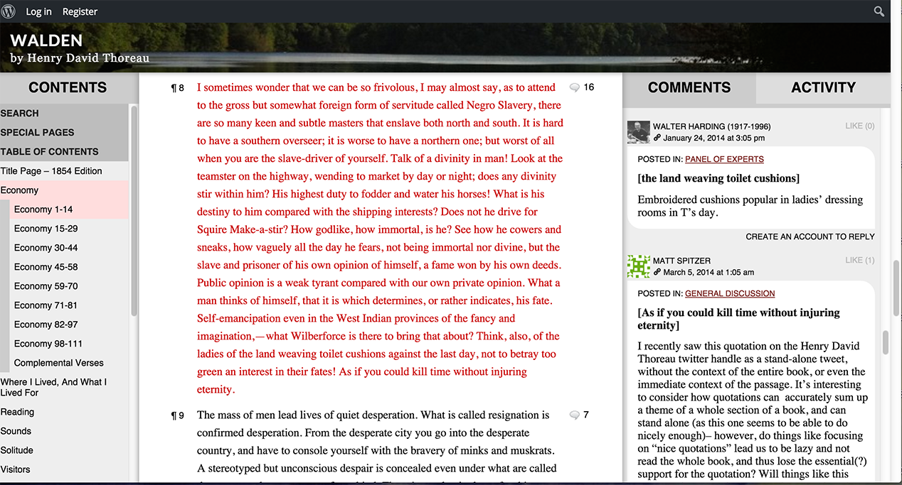
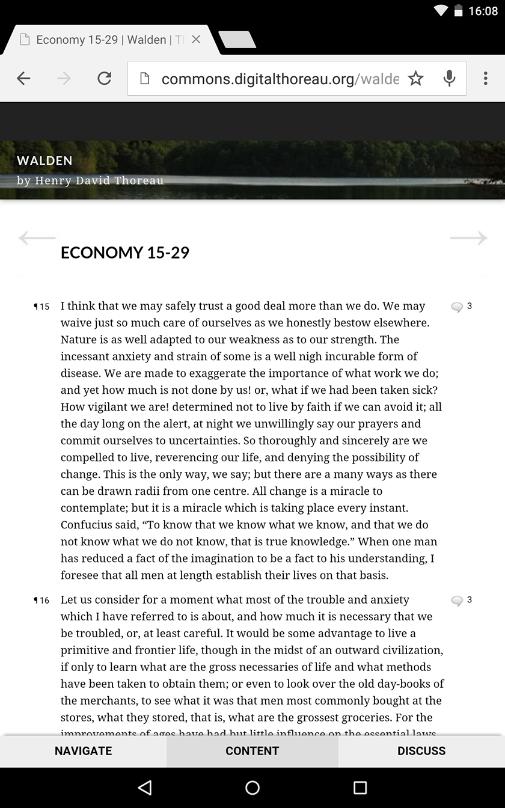
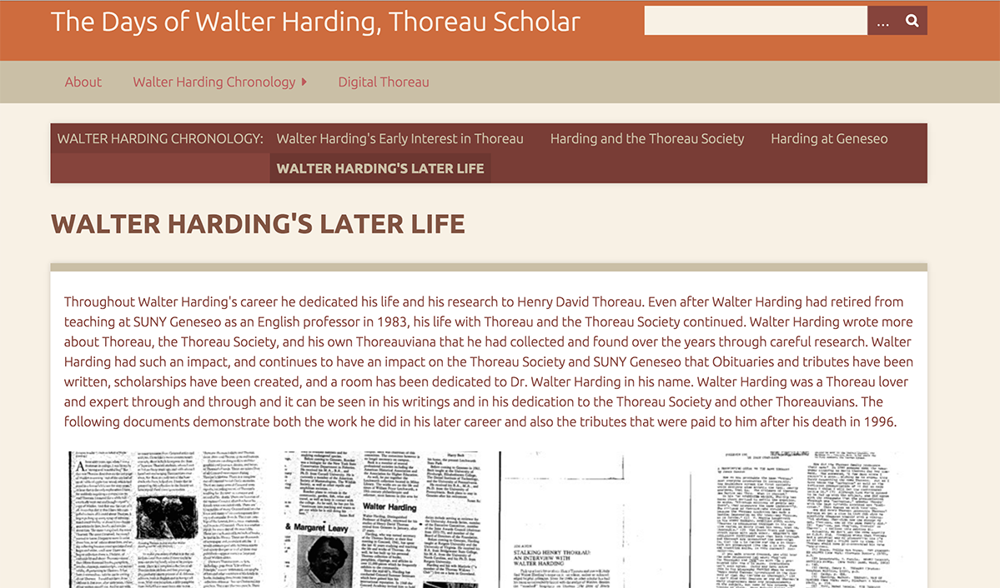

Digital Thoreau
Table of Contents
Abstract
Digital Thoreau is a web resource comprising three digital projects related to the work of Henry David Thoreau created at SUNY Geneseo. The first of these is a fluid text edition of Thoreau’s most famous work Walden. This allows multiple versions of the text to be represented simultaneously in a dynamic environment, which can be a valuable resource to Thoreau scholars, particularly for those interested in researching the genetic aspect of the text. In the second project a very innovative and engaging social reading platform has been created in order to facilitate community and student driven annotation of both Walden and his 1849 essay Resistance to Civil Government. The third project is a student created digital archive of the papers of Thoreau scholar Walter Harding, which is primarily a pedagogical exercise in digital humanities for the students of SUNY Geneseo. Digital Thoreau as a whole is a multi-faceted web resource that offers interesting new opportunities for scholarly research as well as for teaching and public engagement with Thoreau’s influential works.
Introduction
Walden, first published in 1854, is perhaps the best-known work of the nineteenth century American writer, philosopher, civil activist and abolitionist Henry David Thoreau. The work was Thoreau’s memoir of more than two years spent living in a cabin in the woods near Walden Pond in Concord, Massachusetts from 1845 to 1847. Thoreau’s attempt to step away from contemporary society and live a simple and deliberate life in a one-room structure continues to resonate to this day as a symbol of individualism and anti-establishment civil disobedience.

Walden: The Fluid Text Edition
Aims and Objectives
The foundation stone of this genetic representation of the text is the scholarship carried out by Ronald E. Clapper in his 1967 dissertation in which he created a critical apparatus of the Walden manuscript HM924 at the Huntington Library. This built on earlier scholarship conducted by H.M. Shanley and the hypothesis that this particular manuscript was evidence that Walden was created in seven distinct phases, thus represented in Clapper’s critical apparatus. In this review I will not attempt to assess the scholarship carried out by Clapper and Shanley but rather to consider the merits and realization of the scholarship in the chosen digital representation as a fluid text. The selection of Clapper’s representation of Walden is both a practical choice and a very wise decision. Since Clapper’s dissertation is already considered to be indispensible for Thoreau researchers it makes sense to build upon the foundations of this well-established scholarship and attempt to see if representing it in a new form can create space for new scholarly discussions and conclusions on the text.
By taking the critical apparatus from Clapper’s dissertation used to indicate variants and then encoding it in TEI XML the team at Digital Thoreau have enabled the representation and display of the seven proposed variants of the text using the Versioning Machine. The 1971 print edition of Walden edited by Shanley is then used as a base edition to which variants can be compared, in reality leaving the user with eight texts for comparison. Conceptually this appears to have been a resounding success; users can select any combination of one or all variants to read on screen beside each other inside the Versioning Machine interface.
The edition intends to adhere to John Bryant’s principles concerning fluid text which he laid out in 2002 in his book The Fluid Text: A Theory of Revision and Editing for Book and Screen:
Simply put, a fluid text is any literary work that exists in more than one version. It is ‘fluid’ because the versions flow from one to another. Truth be told, all works – because of the nature of texts and creativity – are fluid texts. Not only is this fluidity the inherent condition of any written document; it is inherent in the phenomenon of writing itself. That is, writing is fundamentally an arbitrary hence unstable approximation of thought. Moreover, we revise words to make them more closely approximate our thoughts, which in turn evolve as we write. And this condition and phenomenon of textual fluidity is not a theoretical supposition; it is fact.
Bryant applied his fluid text principles in the creation of the digital edition of Herman Melville’s 1846 book Typee (Bryant 2006). This allows users to view two simultaneous views of a variety of combinations of manuscript, print and diplomatic transcriptions of the work. This works well for that particular project although the layout of two versions displayed one above another would not work for Digital Thoreau, which can show eight versions simultaneously in separate vertical columns. The Typee edition also presents quite comprehensive information on the editorial principles of editing this fluid text as well as insights into the work itself and the process of how it was written and revised. However, this form of editorial information is currently absent from Digital Thoreau. At present, there is rather limited information to explain and justify its editorial concepts and also any editorial decisions that were taken during the creation of the edition. Ideally such an essay would need to provide further information on the selection of Clapper’s dissertation, the decision to use the 1971 edition as its base text, to provide some basic introduction to the principles of ‘fluid text’, some information regarding decisions made in encoding of the text and perhaps some information regarding choices of particular digital tools and software over any alternatives. Paul Schacht is aware of this matter and has indicated to me that there is a plan to provide a full editorial introduction to the edition that will clarify these editorial principles and objectives in the near future. Users of the edition might further benefit if the editors took this one step further by including specific ‘revision narratives’, which are an additional aspect of Bryant’s fluid text model. Revision narratives are intended to provide individualised informative narratives of each site of revision of the text and serve as a direct means of contact between the editors and the readers of a fluid text (Bryant 2002, 159-160). Another planned additional feature for Digital Thoreau will be the inclusion of facsimiles of manuscripts for comparison with the genetic text; this has the potential to be a great enhancement if integrated well in the edition. Furthermore, they hope to incorporate comment and annotation features into this environment that may enhance user engagement and interaction.
Can it be considered to be a genetic edition of Thoreau? There are multiple definitions that can be drawn upon to help establish this. Looking at the three English language definitions of ‘genetic edition’ in the Lexicon of Scholarly Editing I believe the answer is yes. It certainly meets the requirements of Kline’s definition when she states that a genetic-text edition is a ‘textual edition that tries to offer the reader access to more than one level of textual creation within a single page’ – or in this case within a single screen. Bryant’s own definition from his Fluid Text publication is also clearly applicable as it stands as an edition ‘which integrates coded, sequentialized variants into the reading text.’ The final and strictest definition comes from Grésillon via Van Hulle, that it ‘should contain the reproduction of all the genetic documents, bibliographical descriptions, and an introduction regarding the location of the manuscript and the general history of its genesis, comprising letters and other relevant evidence.’ The project does not meet the requirements of this particular definition of genetic criticism as these features are clearly absent. That is not to say that this particular representation of multiple variants on a single screen has no value for genetic critics, in fact I believe quite the opposite is true. This digital representation should be a very useful environment for scholars to develop hypotheses relating to the writing process and other related research questions which they could investigate in further detail elsewhere using additional materials. As Shillingsburg and Van Hulle argue digital environments are ideal for genetic research: ‘Whereas, in scholarly editing, manuscript analysis is often seen as a means to an end, that is, a tool to make an edition, genetic criticism reverses these roles and sees the making of an edition as a tool to facilitate manuscript analysis’ (Shillingsburg and Van Hulle 2015, 36). The very fact that the text used for these variants are based on witnesses hypothesised by Clapper also allows the opportunity to perform further research to confirm or disconfirm the various passages and witnesses which his piece of scholarship presented.
The Fluid Text Edition of Walden can still be considered to be a work-in-progress. Nonetheless, the absence of an editorial essay even at this stage of the edition’s development stands as the crucial shortcoming of Digital Thoreau as a scholarly resource. This does not impact greatly on the usability of the edition as a tool but it does detract significantly from its scholarly credibility. For users who are not specialist scholars of Thoreau, little information is provided regarding the scholarship that led to the hypothesis that the HM924 manuscript is evidence of the work being drafted in seven distinct phases for example. Such a user is left to either take this hypothesis for granted or to seek out original scholarship elsewhere.
Technical background
The Versioning Machine was developed by Susan Schreibman whilst working at the Maryland Institute, first released in 2002 and this version dates to 2010. The purpose of the software is to allow multiple variants of a TEI encoded text to be compared on screen side by side. The creators of Digital Thoreau have not indicated why they chose the Versioning Machine over other alternatives such as CollateX. The advantage of using CollateX, for example, is its extensive documentation on the collation algorithms employed and the possibility to modify them. CollateX, however, requires a much higher level of technical skill to install and operate. Perhaps the Versioning Machine may have been chosen because it is relatively user-friendly. Schreibman herself has described the Versioning Machine as ‘a piece of software in a box designed for non-programmers’ (Hansen 2013). The construction of the edition is also in some ways used as a pedagogical exercise for students of SUNY who have been and continue to be involved in the creation of the edition and perhaps due to this it made sense to utilise more out-of-the-box software options (cf. Hucalak and Richardson 2013).
The Versioning Machine by design does not require users to choose a base version of the text but can potentially compare any version of the text with any other. In this case the print edition by Shanley has been selected as a base text to which all seven variants of the manuscript text are compared. The column displaying the base edition can be closed allowing you to view two or more manuscript versions simultaneously, although the comparative visualisation still relates to the base version. A column containing bibliographic information appears on the left that can be toggled off to make space, as can an optional column of notes on the right-hand side. Columns can be scrolled independently of each other; this allows the user to read different parts of the text at the same time. A slightly frustrating issue with the software is that when navigating between different chapters the view returns to displaying the two default versions rather than retaining the combination of versions you had chosen to display. There is functionality provided for reporting issues – built into the bibliographic information panel – but this was not working at the time of review. The variations in text between versions are clearly indicated using a simple but effective font colour scheme indicated in the bibliographic information column on the left, which indicate unchanged text, changes in text, interpolations, interlineations and strikethroughs.

The TEI XML files are made available for the user to download as a compressed zip or tar file. The TEI encoding of the text was conducted to some extent by students of SUNY Geneseo, although it is unclear to what extent scholars may have been involved in the process of encoding or training the students and checking their output. A recent upgrade of the edition has also made the XSLT source code available in the same way. In this upgrade the project team state that they have cleaned up various textual errors and bugs reported by users. It also includes the addition of a very useful ‘Data Dictionary’ which provides a list and definitions of the TEI elements and attributes employed in encoding the text, aimed at both beginners and advanced users of TEI (Schacht 2014a, Data Dictionary for Walden). Finally, the students at Geneseo have encoded Thoreau’s own journal annotations regarding the text and plugged them into the Versioning Machine as notes, which adds another interesting dimension to allow users to study the genesis of the text.
The Readers’ Thoreau
Overview
Readers’ Thoreau forms the second ‘project’ within the Digital Thoreau website. It aims to present both a digital reading edition of the Walden text and to create an online community of engaged users. They have chosen to use the text of the first print edition of Walden from 1854 as the reading edition and integrated collaborative annotation functionality. This includes annotations from Walter Harding, who as mentioned already was a prominent Thoreau scholar and the subject of the third ‘project’ within Digital Thoreau. This format creates an interesting discourse, whereby annotations from the 1960s sit alongside comments from current users – gathering different generations of scholarship together in one place, as if in conversation with each other. More recently the editors have added a second text, that being Thoreau’s other well-known work Resistance to Civil Government. They have included it in its original form as an essay published in an anthology called Aesthetic Papers in 1849. This more recent addition does not presently display any annotations from earlier scholarship as they have done with the Walden text.

CommentPress is an open source theme and plugin for WordPress that was developed by a think tank called The Institute for the Future of the Book. One advantage of using the WordPress theme is its responsive design; it works well on both tablet and mobile devices. The only hindrance to this is that the user must navigate through the landing pages of Readers’ Thoreau which, although responsive, make it a little unclear how to navigate to the reading text. Tablets are highly social devices; industry statistics show that the use of social media is the second only to gaming on mobile/tablet devices in terms of time spent per app (Bosomworth 2015). Thus, they are potentially an excellent platform for social reading activities. Paul Schacht seems to have made an earlier attempt at this type of social edition using Digress and a text from Project Gutenberg (Schacht 2013).

A social edition?
The project is described in the introductory section as a ‘social edition’ which they define as ‘a text that makes room for readers’ comments and conversations’ (Schacht 2014a, The Readers' Thoreau). It certainly does utilise social software around a recognised edition of the text but it is perhaps a matter of interpretation and chosen definitions as to what extent it constitutes something you could call a social edition. Equally one could discuss whether it can be accurately described as being ‘scholarly’. Annotation is indeed one of the ‘scholarly primitives’ as described by John Unsworth (Unsworth 2000). Placing this activity in a collaborative, social environment is certainly valuable and effective. Readers using this platform can see commentary added both by known scholars of Thoreau in the Panel of Experts section and by more general users. Discussion between experts and general users in no way diminishes the scholarly quality of the commentary provided but rather has the capacity to enhance it. It also provides various functionalities not possible in a print environment such as searching and the interactivity between the text, the discussion forum and its users. On that basis I believe that Readers’ Thoreau can be classified as a digital scholarly edition even by quite strict definitions. Laying down any kind of definition for a ‘social edition’ is less straightforward as there is little scholarly consensus regarding the relatively new concept. Ray Siemens et al. in their exploration of modelling the social edition laid out five modes of social editing: collaborative annotation, user-derived content, folksonomy tagging, community bibliography, and shared text-analysis (Siemens 2012, 451-452). Readers’ Thoreau provides a space for the first item in this list but none of the others, which is not to say that a social edition should or could address all five of these modes simultaneously. Readers’ Thoreau is primarily a social reading edition of one particular variant of the text. It does not go as far as, say, the Social Edition of the Devonshire Manuscript, which was developed by the Electronic Textual Cultures Laboratory at the University of Victoria as a Wikibook (Siemens et al 2014). A Wikibook allows users to edit the text itself, but in the case of Readers’ Thoreau users can only create annotations. The ambition here does not appear to be the creation of a newly edited text but rather to provide a social space in which to engage with that particular text. The edition facilitates interaction among its community of practice. In this domain it is extremely successful, with a highly engaged user community commenting and annotating on a regular basis. To give some sense of quantity, at the time of review there were 500 ‘active’ members, of these 40 were active within the last month alone. There were 20 discussion groups with up to 98 members each; the majority of these being private university groups and the open group called ‘General Discussion’ had 76 members.
One of the ambitions of the reading edition is to allow for what Thoreau would have described as deliberate reading. In the third chapter of Walden he makes clear his opinions on the act of reading: ‘To read well, that is, to read true books in a true spirit, is a noble exercise, and one that will task the reader more than any exercise which the customs of the day esteem. It requires a training such as the athletes underwent, the steady intention almost of the whole life to this object. Books must be read as deliberately and reservedly as they were written’ (Thoreau in Walden, Schacht 2014a, 3.3). The reading environment certainly creates a space for thoughtful reading in deliberation with other members of the community for further consideration and discussion. If Thoreau's living in the woods was a sort of social experiment then Readers’ Thoreau can also be seen as a social experiment in reading, an experiment which has succeeded in creating an engaged community of readers. It would also be interesting to see if there are any ambitions to integrate these annotations with the fluid text in some way in the future.
The Days of Walter Harding, Thoreau Scholar

Conclusion
Digital Thoreau with its fluid text edition has succeeded in utilising the tools of the TEI community, XML encoding and the Versioning Machine, and harnessed them to create a resource that is valuable for both scholarly research and pedagogical endeavours. Digital Thoreau as a whole is in fact a testament to the successful implementation of many open source DH tools when considering its usage of CommentPress and Commons in a Box for Readers’ Thoreau and the usage of Omeka for the Walter Harding project and other widely available publishing technologies such as WordPress.
The main aesthetic and practical criticism of Digital Thoreau lies in its slightly fragmented structure and design. Some consistency of design between the three ‘projects’ of Digital Thoreau would make all the offerings of the resource seem more coherent and apparent for the user. Something as simple as a shared header or banner and more consistent routes of navigation between its constituent parts could be an easy and effective enhancement. The main cause of scholarly apprehension stems from the scarcity of detailed editorial information regarding the construction of the edition. These shortcomings can definitely be rectified and the editors have expressed an awareness of these matters and intend to address them as soon as they can.
The combination of the three very different types of project within Digital Thoreau provides the resource with multiple channels of dissemination to relatively diverse audiences. The fluid text provides a valuable resource to textual scholars to trace the genetic writing process of this influential writer. The Walter Harding project has been harnessed as a pedagogical exercise for students at the home institution of the edition and it can potentially contribute some interesting insights into Thoreau scholarship as a whole. The reading edition is significant for the scholarly community, university course students and the wider public by making available a user friendly digital reading edition embedded within a community environment that knits together diverse interested parties. In my personal opinion Readers’ Thoreau is the most exciting component of the overall project and represents a real and original contribution to the field of digital editing and its methods of user engagement and pedagogical experimentation.
The project occupies an entirely new space within Thoreau scholarship. There is a major on-going project to produce a full scholarly edition of his complete works in print form led by the University of California, with 17 volumes of a planned 28 now published by Princeton University Press (Witherell 1971-present). In the digital sphere there already exists a project called The Thoreau Reader, which was created by Iowa State University in conjunction with the Thoreau Society (Lenat 2009). This provides annotated editions of his books and essays alongside academic essays and other contextual educational documents but has not been updated since 2009. Digital Thoreau could perhaps benefit from some cooperation with these projects or consider providing some similar contextual materials in its modern digital environment.
Digital Thoreau is continuing to develop and grow and will undoubtedly provide increasing value to Thoreau scholarship. It is also admirable that the Digital Thoreau project as a whole really tries to reflect Thoreau’s own philosophy and the message he attempted to convey in Walden, advocating for simple and deliberate living and indeed for deliberate reading.
Bibliography
- Bosomworth, Danyl. 2015. ‘Mobile Marketing Statistics 2015.’ Smart Insights. http://web.archive.org/web/20160604162248/http://www.smartinsights.com/mobile-marketing/mobile-marketing-analytics/mobile-marketing-statistics.
- Bryant, John. 2002. The Fluid Text: A Theory of Revision and Editing for Book and Screen. Ann Arbor: University of Michigan Press.
- Bryant, John. 2006. Herman Melville’s Typee: A Fluid Text Edition. University of Michigan Press. Accessed 07.06.2016. http://rotunda.upress.virginia.edu/melville/default.xqy.
- CommentPress. Version 3.8 (2016). Developed by the Institute for the Future of the Book. http://web.archive.org/web/20160604162526/http://futureofthebook.org/commentpress/.
- Hansen, Amanda D. 2013. ‘DHSI2013: Susan Schreibman and the Versioning Machine.’ Editing Modernism, June 8. http://web.archive.org/web/20160604162626/http://editingmodernism.ca/2013/06/schreibman/.
- Hucalak, Matthew and Richardson, Ashlin. 2013. ‘White Paper: A Survey of Current Collation Tools for The Modernist Versions Project.’ The Modernist Versions Project. http://web.archive.org/web/20160604162751/http://web.uvic.ca/~mvp1922/wp-content/uploads/2013/10/WhitepaperFINAL.pdf.
- Lenat, Richard. 1999-2009. The Thoreau Reader. Accessed 07.06.2016. http://thoreau.eserver.org/.
- Lexicon of Scholarly Editing: A Multilingual Lexicon for a Multilingual Discipline. Accessed 07.06.2016. http://uahost.uantwerpen.be/lse/.
- Schacht, Paul. 2013. Reading Walden. Accessed 07.06.2016. http://www.walden.paulschacht.us/.
- Schacht, Paul. 2014a. Digital Thoreau. Accessed 07.06.2016. http://digitalthoreau.org.
- Schacht, Paul. 2014b. Life in the Digital Woods. http://web.archive.org/web/20160608091603/http://digitalthoreau.org/life-in-the-digital-woods-walden-a-fluid-text-updated/.
- Schacht et al. (ed.), The Days of Walter Harding. Accessed 07.06.2016. http://walterharding.org.
- Shillingsburg, Peter L. and Van Hulle, Dirk. 2015. ‘Orientations to text, revisited’. Studies in Bibliography. 59: 27-44.
- Siemens, Ray, et al. 2012. ‘Towards modelling the social edition: An approach to understanding the electronic scholarly edition in the context of new and emerging social media.’ Literary and Linguistic Computing, 27.4: 445-461.
- Siemens, Ray, et al (eds). 2014. A Social Edition of the Devonshire Manuscript. Accessed 07.06.2016. https://en.wikibooks.org/wiki/The_Devonshire_Manuscript.
- The Readers' Thoreau. Accessed 07.06.2016. http://commons.digitalthoreau.org/.
- Unsworth, John. 2000. Scholarly Primitives: what methods do humanities researchers have in common, and how might our tools reflect this? http://web.archive.org/web/20160604163440/http://people.brandeis.edu/~unsworth/Kings.5-00/primitives.html.
- Versioning Machine. 5.0 (release January 2016). http://web.archive.org/web/20160607173020/http://v-machine.org/.
- Witherell, Elizabeth. 1971-present. The writings of Henry D. Thoreau. http://web.archive.org/web/20160604163634/http://thoreau.library.ucsb.edu/.
@article{digitalthoreau,
author = {Kelly, Aodhán},
title = {Digital Thoreau},
journal = {RIDE – A review journal for digital editions and resources},
number = {4},
year = {2016},
doi = {10.18716/ride.a.4.2},
url = {https://doi.org/10.18716/ride.a.4.2},
}TY - JOUR
AU - Kelly, Aodhán
TI - Digital Thoreau
T2 - RIDE – A review journal for digital editions and resources
IS - 4
PY - 2016
DA - 2016/06
DO - 10.18716/ride.a.4.2
UR - https://doi.org/10.18716/ride.a.4.2
PB - Institut für Dokumentologie und Editorik e.V.
LA - en
ER - Kelly, A. (2016). Digital Thoreau. RIDE – A review journal for digital editions and resources, (4). https://doi.org/10.18716/ride.a.4.2Kelly, Aodhán. "Digital Thoreau." RIDE – A review journal for digital editions and resources, no. 4, 2016. https://doi.org/10.18716/ride.a.4.2.Kelly, Aodhán. "Digital Thoreau." RIDE – A review journal for digital editions and resources, no. 4 (2016). https://doi.org/10.18716/ride.a.4.2.